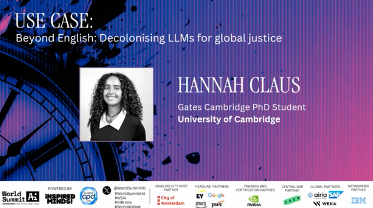
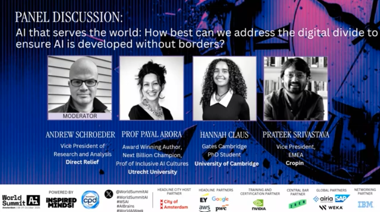
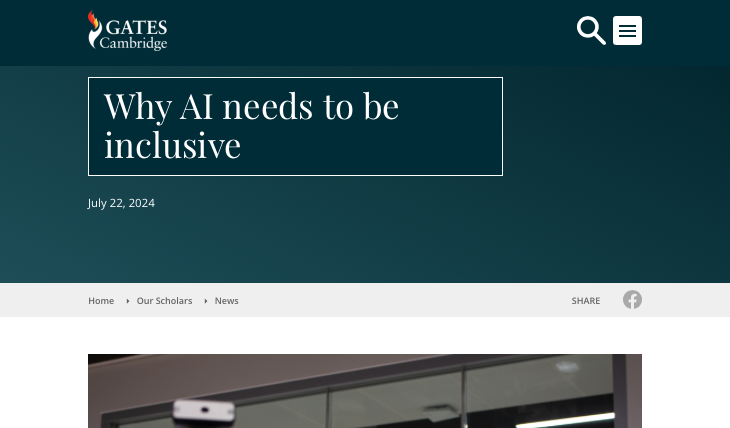

AI/NLP Researcher · Writer · Speaker
Hannah M. Claus
PhD Student · University of Cambridge
I study, build, and write about community-centred language technologies designed with and for the people it affects. This is a home for my research, writing, and general work.
- Focus
- Community-centred AI
- Based in
- Cambridge, UK
- Currently
- PhD Student
About
I am a PhD candidate at the University of Cambridge’s Language Technology Lab, researching low-resource large language models, cultural adaptation, and the social impact of AI.
As a Gates Cambridge Scholar and part of the ELLIS PhD Programme, I am co-supervised at the University of Copenhagen. Previously, I earned an MSc in Artificial Intelligence from Queen Mary University of London as a Google DeepMind Scholar. My work spans AI ethics, explainability, and robotics, with research experience at the Ada Lovelace Institute and the German Aerospace Center. I am passionate about diversity in AI and actively support initiatives that empower women and underrepresented groups in tech.
I am currently working on improving large language models (LLMs) for low-resource languages, focusing on data efficiency, transfer learning, and human-AI collaboration. Many languages lack the extensive datasets that high-resource languages benefit from, making it challenging to develop accurate and culturally appropriate AI models. My research aims to bridge this gap by exploring ways to build sustainable infrastructures with low-resource language communities, decolonise the approaches we currently use to build LLMs, and integrate human feedback effectively.
Full CVCommunity-centred design
Building AI systems in collaboration with the communities they're meant to serve.
Language & access
Investigating how language, infrastructure, and access shape who gets to benefit from AI.
Responsible & participatory AI
Methods and frameworks for participatory, accountable AI development.
Research
What I work on
A running list of the questions, projects, and collaborations that make up my research practice.
Project
Revitalising Endangered Languages and Cultural Heritage
A pilot mobile app to preserve and revitalise Dzardzongke, an endangered Tibetic language of South Mustang, Nepal. Presented at ComputEL-9.
ProjectDecolonising LLMs and Fighting Epistemic Injustice
Why minoritised large language models matter: on epistemic injustice, computational silencing, and the rights at stake when AI doesn't speak your language.
CollaborationEQUATE: Towards Globally Equitable Language Technologies
With Anna Korhonen, building an index and roadmap for more equitable language AI across the world's 7,000+ languages.
OngoingA Mobile-assisted Language Learning & Data Collection Pipeline
An open-source pipeline for mobile-assisted language learning and community-led data collection, evaluated with Dzardzongke and Puno Quechua speakers.
Publications
Papers & writing
Peer-reviewed papers, preprints, and reports. Filter by type below.
Media & Speaking
Talks, podcasts & press
Keynotes, panels, podcast appearances, and coverage of my work.

Keynote
USE CASE Beyond English: Decolonising LLMs for global justice
World Summit AI 2025, Amsterdam, Netherlands


Blog
Recent writing
Shorter, less formal notes — on research, community-centred AI, and things I'm reading.

Community
Engagement & collaboration
Workshops, consultancies, teaching, and the collaborations this work is built on.
Good AI is built with people, in the open, and in relationship with everyone's languages and culteres, never in isolation.
Digital and AI literacy
Constantly lowering the barrier to access and interact with technology.
Decolonising Language Technologies
Before we can work on solutions, people need to acknowledge the issues first.
AI Safety and AI Ethics
Making sure companies and organisations have the support to build better AI.
CV
Background
What I've done so far.
Education
-
2024 - Present
PhD Candidate, Language Technology Lab, University of Cambridge
Community-centred Language Technologies, Gates Cambridge Scholarship
-
2023
MSc Artificial Intelligence, Queen Mary University of London
AI and NLP, Google DeepMind Scholarship
-
2022
BSc Artificial Intelligence and Robotics, University of Bedfordshire
AI and Robotics
Research Experience
-
2023 — 2024
Research Assistant, Ada Lovelace Institute
Researching the impact of AI on marginalised groups in society.
-
2021 — 2022
Research Assitant, German Aerospace Center (DLR)
Developing a framework that provides the full pipeline for a collision-aware contact classifier for the humanoid robot Rollin’ Justin.
Communities
-
2025 — Present
The Centre For Computing History
-
2025 — Present
Ethics, Science, and the Public project
-
2024 — Present
Centre for Human-Inspired AI (CHIA)
-
2023 — Present
Masakhane
-
2020 — Present
We and AI
-
2020 — Present
Black Women in AI
-
2020 — Present
Black in AI
-
2020 — Present
Women in AI
-
2020 — Present
Women in AI and Robotics
AI Advisor / Consultant
-
2026 — Present
Julie AI
-
2023 — 2024
Evenness
Contact
Get in touch
For collaborations, speaking invitations, press, or just to say hello.